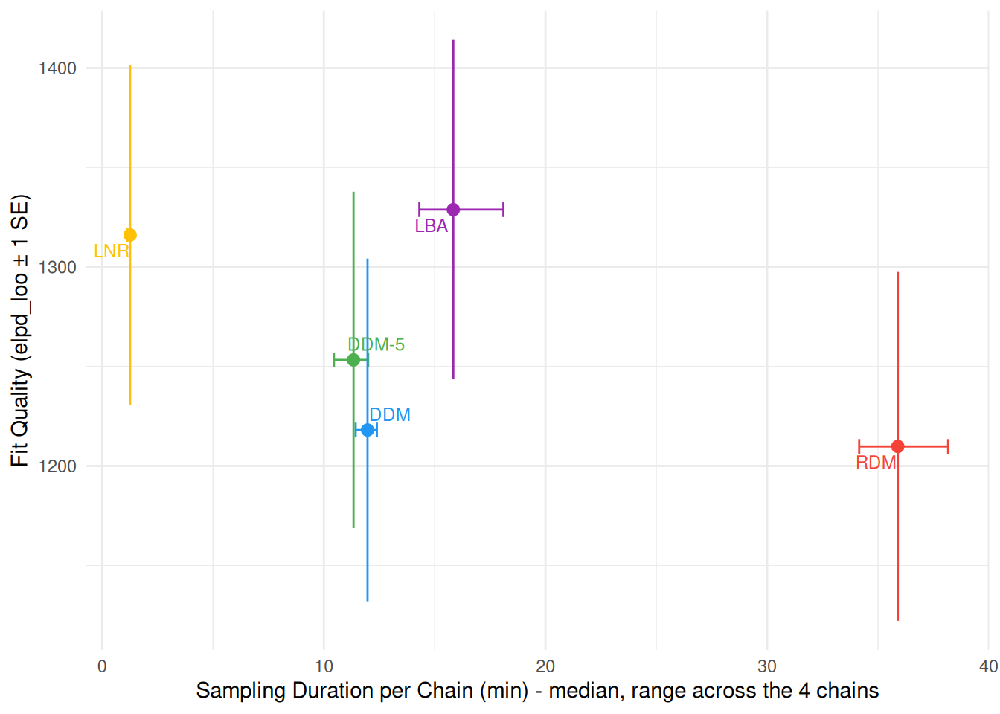

// Both ends of the range are set by the frame, and they move with the boundary
// count. With one boundary every accumulation has to reach it inside the
// figure, which puts the floor at 1.5: the mean path then lands at 0.93 s in
// the slowest corner (boundary 0.8, ndt 0.4). With two, the far boundary takes
// a share 1 / (1 + exp(drift * boundary)) of the responses, which at a
// drift of 3 is one response in twenty - too few to be worth a curve. So the
// range moves down to where both distributions can be seen (0.18 of them at
// the far boundary at the default) and stops at 1.2, which is where the mean
// path still lands inside the frame in that same slowest corner.
viewof drift = Inputs.range(nbounds === 1 ? [1.5, 6] : [1.2, 4],
{value: nbounds === 1 ? 3 : 1.5, step: 0.1,
width: 190})The Key Concept
Most “decision-making” models are evidence accumulation models: they assume that evidence for a decision or choice is accumulated over time until it reaches a threshold. The time it takes to reach the threshold is the observed response time (RT). Many “variants” of such models exist, differing in the assumptions they make about the accumulation process.
Wald Model
drift drift rate
boundary decision threshold
bias start point
ndt non-decision time
Assumptions
boundaries
The Data
Decision making models jointly account for the choice that was made and the response time (RT) it took to make it. Rather than simulating data, we re-use the Wagenmakers et al. (2008) lexical decision data (see the RT-only Models vignette) - but this time, instead of discarding the errors, we model choice as correct vs. error responses. This is a common strategy in the decision-making literature when the task itself does not have a natural “left vs. right” stimulus category to map onto the two accumulators/boundaries of the models below.
Evidence accumulation models are considerably more expensive to sample than the RT-only models. We therefore use a smaller subset of the data here, only three participant, so that the models below can be fit in a reasonable amount of time for demonstration purposes.
set.seed(123) # For reproducibility
# Experiment 1 of Wagenmakers et al. (2008), from rtdists.
data(speed_acc, package = "rtdists")
df <- data.frame(
Participant = as.integer(as.character(speed_acc$id)),
Condition = unname(c(accuracy = "Accuracy", speed = "Speed")[
as.character(speed_acc$condition)]),
RT = speed_acc$rt,
Error = as.integer(as.character(speed_acc$response) != as.character(speed_acc$stim_cat)),
Frequency = unname(c(high = "High", low = "Low", very_low = "Very Low")[
sub("^nw_", "", as.character(speed_acc$frequency))])
)
df <- df[df$Participant %in% c(1, 2, 3) & df$RT <= 2, ]
# Show 10 first rows
head(df, 10)
#> Participant Condition RT Error Frequency
#> 1 1 Speed 0.700 0 Low
#> 2 1 Speed 0.392 1 Very Low
#> 3 1 Speed 0.460 0 Very Low
#> 4 1 Speed 0.455 0 Very Low
#> 5 1 Speed 0.505 1 Low
#> 6 1 Speed 0.773 0 High
#> 7 1 Speed 0.390 0 High
#> 8 1 Speed 0.587 1 Low
#> 9 1 Speed 0.603 0 Low
#> 10 1 Speed 0.435 0 High
ggplot(df, aes(x = RT, fill = Condition)) +
geom_histogram(data = df[df$Error == 0, ], aes(y = after_stat(count) / (nrow(df) * 0.02)),
binwidth = 0.02, alpha = 0.6, position = "identity") +
geom_histogram(data = df[df$Error == 1, ], aes(y = -after_stat(count) / (nrow(df) * 0.02)),
binwidth = 0.02, alpha = 0.6, position = "identity") +
geom_hline(yintercept = 0, color = "black", linewidth = 0.3) +
labs(x = "RT (s)", y = "Distribution (Error - Correct)", fill = "Response") +
scale_fill_manual(values = c("Accuracy"="#3F51B5", "Speed"="#F4511E")) +
theme_minimal()
Errors are much rarer than correct responses (especially in the Accuracy condition), which can be problematic for accurate estimations.
Models
All five models below use dec(Error) to indicate the two-choice outcome (0 = Correct, 1 = Error), and all five share the parameterization used by the RT-only families (see vignette("outliers")): ndt is estimated directly, in seconds, and a poutlier parameter mixes in an outlier process so that ndt is not capped at the fastest observed response. The outlier component is a half Normal with a fixed scale of 0.2 s, so reaction times must be in seconds.
cogmod_priors() and cogmod_inits() read the family off the formula, so the same three lines set up any of them. Both are worth using rather than hand-written priors and init = 0: on a log link init = 0 starts ndt at exp(0) = 1 second, above nearly every observed RT, and each of these families has at least one direction the likelihood is flat in that brms would otherwise leave improper.
Drift Diffusion Model (DDM)
The DDM assumes that evidence accumulates towards one of two boundaries at a rate mu (drift rate). boundary is the boundary separation (higher = more cautious), bias is the starting point between the two boundaries (0.5 = unbiased), and ndt is the non-decision time, in seconds.
Two conventions invert the signs one might expect. Following brms’s own wiener() family, the response coded 1 in dec() - here the error - is the upper boundary, and bias is measured from the lower one. Good performance therefore shows up as a negative mu, and bias > 0.5 puts the start point closer to the error boundary, making errors faster than correct responses (bias < 0.5 makes them slower; at exactly 0.5 the two conditional RT distributions are identical).
Note that we use the “simple” 4-parameter DDM here, which does not include between-trial variability in drift rate, starting point, or non-decision time, hence the sigmadrift, sigmabias, and sigmandt parameters are fixed to 0. Estimating these parameters is possible, but considerably more expensive and often unnecessary for many applications. Note that sigmandt is the between-trial range of the non-decision time in seconds (st0), with ndt its lower bound.
f <- bf(
RT | dec(Error) ~ Condition,
boundary ~ Condition,
bias ~ 1,
ndt ~ 1,
sigmadrift = 0,
sigmabias = 0,
sigmandt = 0,
family = cogmod_ddm()
)
m_ddm <- brm(f,
data = df,
prior = cogmod_priors(f, df),
init = cogmod_inits(f, df),
stanvars = cogmod_stanvars(f),
chains = 4, iter = 500, backend = "cmdstanr"
)
m_ddm <- brms::add_criterion(m_ddm, "loo") # Add model performance criterionDDM with Drift Variability (DDM-5)
The three variability parameters each produces a specific effect on the relative speed of correct and error responses. Between-trial variability in the drift rate (sigmadrift, Ratcliff’s ) makes errors slower than correct responses, because errors are then contributed disproportionately by the trials that happened to draw a low drift. Variability in the starting point (sigmabias, ) does the opposite, producing faster errors, and variability in the non-decision time (sigmandt, ) mostly affects the leading edge of the distribution. Which one to free is therefore an empirical question with a visible answer, and here the errors are slightly slower than the correct responses - so sigmadrift is the parameter to free.
We keep sigmabias and sigmandt fixed at 0, for two reasons. Statistically they are weakly identified with only few error trials, and computationally the exact zero matters: cogmod’s Stan code falls back to the dedicated (and much cheaper) drift-variability-only density when both are exactly 0, and to adaptive numerical quadrature otherwise. A prior concentrated near zero would pay the full cost of the 7-parameter form without buying anything.
f <- bf(
RT | dec(Error) ~ Condition,
boundary ~ Condition,
bias ~ 1,
ndt ~ 1,
sigmadrift ~ 1,
sigmabias = 0,
sigmandt = 0,
family = cogmod_ddm()
)
# cogmod_priors() already supplies normal(0, 1) for sigmadrift, for the same
# reason it fences the other flat directions.
m_ddm5 <- brm(f,
data = df,
prior = cogmod_priors(f, df),
init = cogmod_inits(f, df),
stanvars = cogmod_stanvars(f),
chains = 4, iter = 500, backend = "cmdstanr"
)
m_ddm5 <- brms::add_criterion(m_ddm5, "loo") # Add model performance criterionLogNormal Race (LNR)
The LNR is a somewhat simpler model. It is similar to the LBA, but each accumulator’s finishing time is drawn directly from a LogNormal distribution instead of a ballistic accumulation process. mu (nuzero) and nuone are the (inverse log-space mean) processing speeds for the “Error” and “Correct” accumulators, and sigmazero/sigmaone their log-space SDs.
The LNR also has a sigmabias parameter, a Uniform start-point range below a threshold pinned one unit above it, which turns it into the LBA with LogNormal drift rates (Heathcote & Love, 2012). It is fixed at zero here, which is the LNR proper: a start-point range is hard to identify from the shape of the RT distribution alone and adds a flat direction to the likelihood at zero, so it is worth estimating only with a lot of data or a specific hypothesis about start-point variability (see ?cogmod_lnr).
Like every family in this package, the LNR is fit with ndt and poutlier: ndt is estimated in seconds, with no upper bound tied to the fastest observed response, and poutlier is the proportion of trials attributed to a contaminant guessing process (see vignette("outliers")). cogmod_priors() and cogmod_inits() both read the family off f, so they need no family-specific setup - and init = 0 is actively harmful here: on the log link it starts ndt at exp(0) = 1 second, above nearly every observed RT.
f <- bf(
RT | dec(Error) ~ Condition,
nuone ~ Condition,
sigmazero ~ 1,
sigmaone ~ 1,
sigmabias = 0,
ndt ~ Condition,
family = cogmod_lnr()
)
m_lnr <- brm(f,
data = df,
prior = cogmod_priors(f, df),
init = cogmod_inits(f, df),
stanvars = cogmod_stanvars(f),
chains = 4, iter = 500, backend = "cmdstanr"
)
m_lnr <- brms::add_criterion(m_lnr, "loo") # Add model performance criterionLinear Ballistic Accumulator (LBA)
The LBA assumes two independent accumulators (one per choice) that race towards a common threshold b (sigmabias = start-point range A, boundary = extra distance so that b = A + boundary). mu and driftone are the mean drift rates for the “Correct” and “Error” accumulators, and sigmazero/ sigmaone their between-trial drift variability.
Note that sigmazero is fixed to 1 below. The evidence scale of an LBA is arbitrary - multiply the drifts, their SDs, the start-point range and the threshold by any constant and every finishing time is unchanged - so the six parameters are identified only up to a common factor. Priors make the posterior proper; only fixing one of them identifies the scale.
Two more things are worth knowing before reading the estimates. First, each drift rate is a Normal truncated at zero (the convention of rtdists, DMC and EMC2; see ?rcogmod_lba2), and for an accumulator that rarely wins - the error accumulator here, with a 5% error rate - the truncated Normal’s location and scale are identified only through their ratio. driftone will therefore come out well below zero with a wide sigmaone, and the pair should be read together, as the shape of a distribution of small positive rates, rather than driftone alone as a mean drift. Fixing sigmaone = 1 as well is sometimes worth doing.
Second, in our case, the boundary and ndt parameter are strongly correlated, which makes sampling difficult and slow. In these cases, setting metric = "dense_e" can help (x2 speed-ups in our case). This setting is worth trying in other models as well. While it might pay off for low-dimensional posteriors with strong correlations, for a hierarchy with hundreds of participant-level parameters the dense matrix has more entries to estimate than warmup can pin down, and the default might be the safer choice. The performance article explains the trade-off and reports what it bought across the families in a local benchmark.
f <- bf(
RT | dec(Error) ~ Condition,
driftone ~ Condition,
sigmazero = 1,
sigmaone ~ 1,
sigmabias ~ 1,
boundary ~ 1,
ndt ~ 1,
family = cogmod_lba2()
)
m_lba <- brm(f,
data = df,
prior = cogmod_priors(f, df),
init = cogmod_inits(f, df),
stanvars = cogmod_stanvars(f),
chains = 4, iter = 500, backend = "cmdstanr",
metric = "dense_e" # see above
)
m_lba <- brms::add_criterion(m_lba, "loo") # Add model performance criterionRacing Diffusion Model (RDM)
The RDM is the LBA’s stochastic counterpart - each accumulator integrates evidence through the DDM’s random walk process instead of accumulating linearly. It otherwise keeps the racing architecture: two independent accumulators, a common threshold b, and a start point drawn from Uniform(0, sigmabias). The consequence of swapping the ballistic path for a diffusing one is that the noise now lives within a trial rather than between trials. That is the point of the model: Tillman et al. (2020) show that within-trial variability alone accounts for the benchmark choice-RT phenomena, without the between-trial drift variability that the LBA (sigmazero/sigmaone) and the full DDM (sigmadrift) need. It is therefore the more parsimonious race: mu and driftone are the drift rates for the “Correct” and “Error” accumulators, and there is no drift variability parameter to estimate.
Because each accumulator is a Wald (shifted inverse Gaussian) process, the drift rates use a softplus link and are constrained to be non-negative. Like the LNR, ndt is estimated in seconds, and poutlier is the proportion of trials attributed to a contaminant early responses (see vignette("outliers")).
f <- bf(
RT | dec(Error) ~ Condition,
driftone ~ Condition,
sigmabias ~ 1,
boundary ~ 1,
ndt ~ 1,
family = cogmod_rdm()
)
m_rdm <- brm(f,
data = df,
prior = cogmod_priors(f, df),
init = cogmod_inits(f, df),
stanvars = cogmod_stanvars(f),
chains = 4, iter = 500, backend = "cmdstanr"
)
m_rdm <- brms::add_criterion(m_rdm, "loo") # Add model performance criterionIdentifiability of sigmabias and boundary: This concerns the LBA as much as the RDM, since both are parameterized the same way. The two parameters enter the model only through the threshold b = boundary + sigmabias, so they trade off almost freely, potentially ruining model convergence.
This is a different identifiability problem from the model’s overall scale invariance - multiplying every drift, its SD, the start-point range and the threshold by a constant leaves every finishing time unchanged - which the LBA literature resolves by fixing one drift-rate SD to 1 (Brown & Heathcote, 2008), the convention already used for sigmazero above. There is no equivalent standard fix for the boundary/sigmabias split itself. Toolboxes that estimate by maximum likelihood (e.g. rtdists) just let both float freely and accept the estimation noise that comes with it; Bayesian hierarchical packages built around this model class (e.g. EMC2, the successor to DMC) do not fix either parameter outright either - they regularize the ridge with weakly-informative priors and partial pooling across participants and conditions rather than pin the split down directly. cogmod takes the same route at the level of a single fit: a prior on sigmabias might help, and for the RDM cogmod_priors() supplies a weakly informative one (normal(0, 1)) on the softplus scale.
A prior of that shape does not make sigmabias itself trustworthy, though, so prefer boundary + sigmabias whenever you interpret a threshold or compare one across conditions, and treat the split between the two as weakly-determined.
When errors are too few to identify the second accumulator: every race above has to estimate an error process, and when errors are scarce that process is informed by almost nothing. On the Accuracy condition of these data, which carries about 75 errors, an RDM left to itself runs driftone down to the floor of its link (a drift of 0.0001) with half of the transitions divergent; cogmod_priors() fences that with a prior on the error drift (see ?rcogmod_rdm). The structural alternative is to stop modelling the error process altogether and fit the RT-only family with the errors as right-censored correct responses, bf(RT | cens(Error) ~ ...): an error then says only that the correct process had not finished yet, so there is no error accumulator to run away. On cogmod_invgaussian() this is the censored shifted Wald of Miller et al. (2018). It is described in the Censored Shifted Wald section of the RT-only Models vignette, together with the one check to run first: censoring can only produce errors slower than correct responses, so where errors are faster - a low boundary, a biased start point - stay with the race.
Model Comparison
Everything below is fitted to a subset of data, with no random effects, short chains, and predictors on only some parameters - with the goal of demonstrating the workflow. The “findings” are thus not to be taken at face value.
Model Fit
loo::loo_compare(m_ddm, m_ddm5, m_lba, m_lnr, m_rdm) |>
parameters(include_ENP = TRUE)
#> # Fixed Effects
#>
#> Name | LOOIC | ENP | ELPD | Difference | Difference_SE | p
#> ------------------------------------------------------------------------
#> m_lba | -2657.6 | 7.38 | 1328.82 | 0.00 | 0.00 |
#> m_lnr | -2632.2 | 10.41 | 1316.08 | -12.74 | 10.90 | 0.242
#> m_ddm5 | -2506.6 | 11.06 | 1253.31 | -75.52 | 18.84 | < .001
#> m_ddm | -2436.2 | 10.66 | 1218.08 | -110.75 | 21.43 | < .001
#> m_rdm | -2419.6 | 6.92 | 1209.82 | -119.00 | 18.14 | < .001Sampling Duration
Choice+RT models are considerably more expensive to sample than RT-only models: the DDM relies on Stan’s wiener_lpdf, which is comparatively slow, while the LBA, LNR and RDM likelihoods involve evaluating both a “winner” density and a “loser” survival function for every observation. Among the three races, the LNR is by far the cheapest, since its density and survival are just LogNormal ones, while the RDM and the LBA are much slower. Freeing sigmadrift is not free either: DDM-5 costs is significantly slower than the simple DDM, though it remains cheaper than either of the two slow races.
models <- list(
DDM = m_ddm, `DDM-5` = m_ddm5, LNR = m_lnr, LBA = m_lba, RDM = m_rdm
)
model_levels <- names(models)
duration <- do.call(rbind, lapply(model_levels, function(nm) {
data_modify(attributes(models[[nm]]$fit)$metadata$time$chain, Model = nm)
})) |>
data_modify(Model = factor(Model, levels = model_levels), Minutes = total / 60)
duration_range <- duration |>
summarize(
duration_min = min(Minutes),
duration_median = median(Minutes),
duration_max = max(Minutes),
.by = Model
)
quality <- do.call(rbind, lapply(model_levels, function(nm) {
est <- models[[nm]]$criteria$loo$estimates
data.frame(Model = nm, elpd = est["elpd_loo", "Estimate"], elpd_se = est["elpd_loo", "SE"])
})) |>
data_modify(Model = factor(Model, levels = model_levels))
fit_summary <- merge(duration_range, quality, by = "Model")
fit_summary |>
ggplot(aes(x = duration_median, y = elpd, color = Model)) +
geom_errorbar(aes(xmin = duration_min, xmax = duration_max), orientation = "y") +
geom_errorbar(aes(ymin = elpd - elpd_se, ymax = elpd + elpd_se), width = 0) +
geom_point(size = 2.5) +
ggrepel::geom_text_repel(aes(label = Model), size = 3.2, show.legend = FALSE) +
scale_color_material_d(guide = "none") +
labs(
x = "Sampling Duration per Chain (min) - median, range across the 4 chains",
y = "Fit Quality (elpd_loo ± 1 SE)"
) +
theme_minimal()
Posterior Predictive Check
Each model predicts a pair of outcomes per trial, so estimate_prediction() returns them in a Component column ("rt" and "response"), which we pivot back into two columns.
Correct responses are drawn upwards and errors downwards, with the observed data as histograms and the five models as overlaid density lines (faint: one per posterior draw; bold: pooled over draws). Rather than normalizing each half separately, both are scaled by the proportion of that response, so that the area under each curve equals its predicted frequency - which is why the error half is roughly a twelfth of the size of the correct one. This makes the plot a check on the joint distribution of choices and RTs: a model can only match it by getting the error rate and the shape of both RT distributions right.
Code
pred <- rbind(
estimate_prediction(m_ddm, data = df, iterations = 50,
keep_iterations = TRUE, ci = NULL) |>
reshape_iterations() |>
data_modify(Model = "DDM"),
estimate_prediction(m_ddm5, data = df, iterations = 50,
keep_iterations = TRUE, ci = NULL) |>
reshape_iterations() |>
data_modify(Model = "DDM-5"),
estimate_prediction(m_lnr, data = df, iterations = 50,
keep_iterations = TRUE, ci = NULL) |>
reshape_iterations() |>
data_modify(Model = "LNR"),
estimate_prediction(m_lba, data = df, iterations = 50,
keep_iterations = TRUE, ci = NULL) |>
reshape_iterations() |>
data_modify(Model = "LBA"),
estimate_prediction(m_rdm, data = df, iterations = 50,
keep_iterations = TRUE, ci = NULL) |>
reshape_iterations() |>
data_modify(Model = "RDM")
) |>
datawizard::data_select(select = c("Row", "Component", "Condition", "iter_value", "iter_group", "iter_index", "Model")) |>
datawizard::data_to_wide(id_cols = c("Row", "iter_group", "Model", "Condition"), values_from = "iter_value", names_from = "Component") |>
data_modify(Model = factor(Model, levels = c("DDM", "DDM-5", "LNR", "LBA", "RDM")))
# The LBA occasionally predicts enormous RTs (a near-zero drift rate takes a
# very long time to reach the threshold). `stat_density()` spreads its
# evaluation grid over the whole x-axis range, so a single extreme draw would
# flatten every curve.
pred <- data_filter(pred, rt < 3)
correct <- pred[pred$response == 0, ]
error <- pred[pred$response == 1, ]
n_obs <- nrow(df) # Trials per posterior draw
n_iter <- length(unique(pred$iter_group))
bw <- 0.02 # Histogram bin width
# Dividing the counts by the *total* number of trials (rather than by the
# number of trials of that response) scales each half by its own frequency.
p <- ggplot(df, aes(x = RT)) +
# Observed data
geom_histogram(data = df[df$Error == 0, ], aes(y = after_stat(count) / (nrow(df) * 0.02),
fill = Condition),
binwidth = 0.02, alpha = 0.6, position = "identity") +
geom_histogram(data = df[df$Error == 1, ], aes(y = -after_stat(count) / (nrow(df) * 0.02),
fill = Condition),
binwidth = 0.02, alpha = 0.6, position = "identity") +
# One faint line per posterior draw
# geom_line(data = correct,
# aes(x = rt, y = after_stat(count) / n_obs, color = Model,
# group = interaction(Model, iter_group, Condition)),
# stat = "density", alpha = 0.05, linewidth = 0.3) +
# geom_line(data = error,
# aes(x = rt, y = -after_stat(count) / n_obs, color = Model,
# group = interaction(Model, iter_group, Condition)),
# stat = "density", alpha = 0.05, linewidth = 0.3) +
# Posterior predictive density, pooled over draws
geom_line(data = correct,
aes(x = rt, y = after_stat(count) / (n_obs * n_iter),
color = Model, linetype = Condition),
stat = "density", linewidth = 1.2) +
geom_line(data = error,
aes(x = rt, y = -after_stat(count) / (n_obs * n_iter),
color = Model, linetype = Condition),
stat = "density", linewidth = 1.2) +
geom_hline(yintercept = 0, color = "grey40", linewidth = 0.3) +
scale_color_material_d(palette = "rainbow") +
scale_fill_manual(values = c("Accuracy"="#3F51B5", "Speed"="#F4511E")) +
guides(color = guide_legend(override.aes = list(alpha = 1, linewidth = 1.2)),
linetype = "none") +
coord_cartesian(xlim = c(0.25, 1.25)) +
labs(x = "RT (s)", y = "Density (up = Correct, down = Error)", color = "Model") +
# facet_wrap(~Model) +
theme_minimal()
p
The mismatch discussed above is visible in the lower half: the DDM (purple) places its error density well to the left of the observed errors, while the three races put theirs on top of them. DDM-5 (blue) sits between the two - it recovers the average error timing but spreads the errors too widely. In the upper half all five are close, which is the point worth taking away: a model’s problem can be invisible if one only looks at the RTs of correct responses.